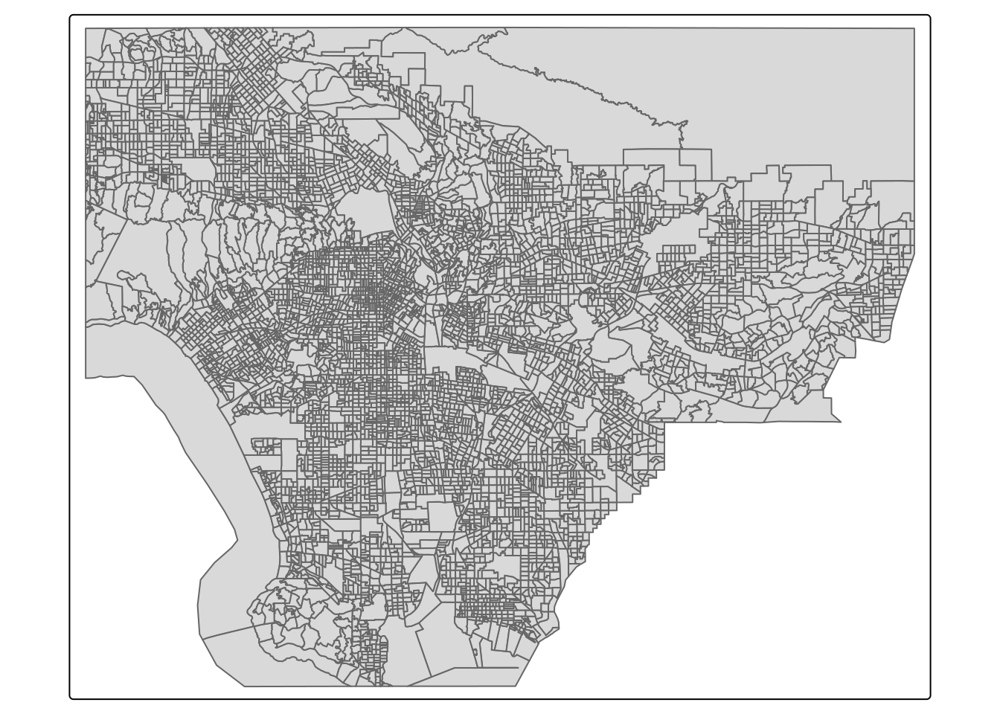

View Code
library(tmap)
library(tidyverse)
library(sf)
library(tidyverse)
library(ggspatial)
library(gt)
library(here)In the 1930s, the Home Owners’ Loan Corporation (HOLC) rated neighborhoods based on their perceived safety for real estate investment. This ranking system was used to block access to loans for home ownership. This practice, more commonly known as “redlining” continues to have consequences on community health and wealth1. This includes environmental health, as redlined neighborhoods are less likely to have greenery2, and are hotter than other neighborhoods3. This analysis examines discrepancies in biodiversity observations, which tend to be lower in redlined communities4. This becomes a pressing issue as citizen science data continues to be used for additional reports, which can affect restoration project planning. This analysis will use data from the United States Environmental Protection Agency in addition to avian biodiversity data to examine the distribution of citizen science contributions.
The United States Environmental Protection Agency (EPA) EJScreen tool provides data for screening and mapping environmental or demographic information. Information is provided at the US Census tract and block level. For this analysis, we will be utilizing block group data from the EPA site.
The Digital Scholarship Lab at the University of Richmond has processed geographic data available on historic HOLC grades. The maps were created as part of the Mapping Inequality project.
Data on bird observations was obtained from the Global Biodiversity Information Facility. The Global Biodiversity Information facility is the largest aggregator of biodiversity observations in the world. This data typically contains information on the location and species observed. For this analysis, we will be assessing observations from 2021 onward.
library(tmap)
library(tidyverse)
library(sf)
library(tidyverse)
library(ggspatial)
library(gt)
library(here)# read in data
ejscreen <- st_read(here("data", "EJSCREEN_2023_BG_StatePct_with_AS_CNMI_GU_VI.gdb"))
#filter to Los Angeles County
los_angeles <- ejscreen %>%
filter(CNTY_NAME == "Los Angeles County") %>%
st_transform(crs = "EPSG:4326")
# check filter accuracy
unique(los_angeles$CNTY_NAME)# read in LA redlining data
la_redlining <- st_read("https://dsl.richmond.edu/panorama/redlining/static/citiesData/CALosAngeles1939/geojson.json") %>%
st_make_valid() %>% #fix invalid geometries
st_transform(los_angeles, crs = "EPSG:4326") #reproject
# check redlining and ejscreen data have the same crs
st_crs(los_angeles) == st_crs(la_redlining)# read in bird data
birds <- st_read(here('data/gbif-birds-LA/gbif-birds-LA.shp')) %>%
filter(year == '2022') #filer to year 2022
# check the CRS for birds and redlining data
st_crs(birds) == st_crs(la_redlining)Mapping wastewater discharge in LA County:
The following map provides an exploratory map to demonstrate information available through EJScreen. The percentile for wastewater discharge by census block groups (P_PWDIS) was mapped, and centroids were added to highlight areas above the 95th percentile. Additional data from EJScreen includes air quality, distance to superfund sites, cancer rates, education levels, and more.
# filter to only include P_PWDIS above 95th percentile
centroid_above_95th <- los_angeles %>%
filter(P_PWDIS > 95) %>%
st_centroid()
# use a bbox to isolate LA
la_crop <- st_crop(x = los_angeles, y = st_bbox(la_redlining))
# check that crop is a Los Angeles without Channel Islands
tm_shape(la_crop) +
tm_polygons()
# create map
tm_shape(la_crop) + #using cropped shape to remove islands
tm_graticules() + #add graticules
tm_fill(fill = 'P_PWDIS') + #fill by percentile wastewater discharge
tm_borders(col_alpha = 0.2) + #add transparent borders
tm_shape(centroid_above_95th) + #add points w/centroid data
tm_dots(fill ='firebrick2', size = 0.7, fill_alpha = 0.5) +
tm_compass(type = "arrow", position = c("right", "bottom"), size = 2) +
tm_scale_bar() Assess Income Levels:
The following calculation represents the percent of census block groups where less than 5% of the population is considered low-income. This can be calculated using the LOWINCPCT column from the EJScreen data.
#check for NAs, they'll be removed during filter & will affect total
sum(is.na(los_angeles$LOWINCPCT))[1] 0#filter to percent of low income
low_income <- los_angeles %>%
filter(LOWINCPCT < 0.05)
# No NAs, so can divide by total number of rows to find
nrow(low_income)/nrow(los_angeles) *100[1] 6.114398Based on this calculation, in Los Angeles, less than 5% of the population is considered low-income in 6.11% of census block groups.
Particulate Matter and Superfund Areas:
The following calculation estimates the percent of census block groups that are above the 80th percentile for Particulate Matter 2.5, and the 80th percentile for Superfund proximity.
# check for NAs that affect total number of census block groups
# use the smaller total in % calc
total1 <- nrow(los_angeles) - sum(is.na(los_angeles$P_PM25))
total2 <- nrow(los_angeles) - sum(is.na(los_angeles$P_PNPL))
# subset by applying desired constraints
# filter will remove NAs
pm_pnpl_subset <- los_angeles %>%
filter(P_PM25 > 80 & P_PNPL > 80)
# calculate percentage
nrow(pm_pnpl_subset)/total2 * 100[1] 17.39924In Los Angeles, 17.4% of census block groups are above the 80th percentile for Particulate Matter 2.5 AND Superfund proximity.
The following map depicts historical redlining boundaries in Los Angeles. The HOLC ranking system from highest to lowest is as follows:
Neighborhoods with lower ratings, red and yellow, often exhibit many of the environmental impacts described above.
#create color pallette to match HOLC grades
my_pal <- c('palegreen3','royalblue3','goldenrod1','firebrick')
# create map of redlining boundaries
tm_shape(la_crop) + # use cropped shape to remove islands
tm_graticules() + #add graticules
tm_fill('lightgray') + #place LA shape in background
tm_borders(col_alpha = 0.3) + # add semi-transparent borders
tm_shape(la_redlining) + # add redlining data
tm_fill(fill = "grade", palette=my_pal) + # fill by HOLC grade
tm_compass(type = "arrow", position = c("right", "top"), size = 2) +
tm_scale_bar()
Both the census data and HOLC-grade data provide geographic information on Los Angeles County. We can calculate present-day census groups within HOLC grades to compare historic redlining to present-day census grouping.
# check both df have the same CRS
st_crs(los_angeles) == st_crs(la_redlining)[1] TRUE# find number of census block groups within HOLC grades
redlining_intersections <- st_join(x = los_angeles,
y = la_redlining,
join = st_within,
left = FALSE)
# check number of rows
glue::glue('Number of Census Groups within HOLC Grades: {nrow(redlining_intersections)}')Number of Census Groups within HOLC Grades: 920Using both EJScreen data and HOLC grade boundaries, we can examine how different environmental factors are distributed. For this brief assessment, the mean values for the percent of low-income individuals, percentile for particulate Matter 2.5, percentile for low life expectancy, and percentile for air toxics cancer risk were calculated.
#calculate ejscreen data averages
redlining_intersections %>%
group_by(grade) %>%
st_drop_geometry() %>% # needed to drop geoms to use gt() table
summarise(low_inc_pct = mean(LOWINCPCT, na.rm = TRUE),
P_PM_2.5 = mean(P_PM25, na.rm = TRUE),
P_low_life_expectancy = mean(P_LIFEEXPPCT, na.rm = TRUE),
P_air_cancer_risk = mean(P_CANCER, na.rm = TRUE)) %>% gt() %>%
tab_header("Mean Values by HOLC Grade")| Mean Values by HOLC Grade | ||||
| grade | low_inc_pct | P_PM_2.5 | P_low_life_expectancy | P_air_cancer_risk |
|---|---|---|---|---|
| A | 0.1781644 | 67.93333 | 22.60000 | 29.66667 |
| B | 0.2805268 | 78.92208 | 43.37838 | 47.49351 |
| C | 0.4104716 | 81.33595 | 58.58299 | 56.84676 |
| D | 0.4388055 | 82.80488 | 59.27957 | 64.01742 |
| NA | 0.4478901 | 73.96875 | 65.18750 | 38.34375 |
Based on the ranking set by the Home Owners’ Loan Corporation (HOLC), the mean values shown above are not surprising. The HOLC ranking system was meant to demonstrate “desirable” areas, and areas with grade “A” have higher average incomes, life expectancy, and air quality. These mean also values demonstrate the consequences of redlining on community health and wealth.
Using bird observations from 2022, the percent of observations within neighborhoods with HOLC grades were calculated and plotted below.
# join bird & redlining to find birds w/in HOLC graded neighborhoods
birds_2022 <- st_join(x = birds,
y = la_redlining,
join = st_within,
left = FALSE)
# Create and store total percent of bird observations to plot
birds_percent <- birds_2022 %>%
group_by(grade) %>%
st_drop_geometry() %>%
summarise(percentage = (n()/nrow(birds_2022))*100)
# plot % bird observations per HOLG grade
ggplot(birds_percent, aes(x = reorder(grade, percentage),
y = percentage,
fill = grade)) +
geom_col() +
scale_fill_manual(values = c('palegreen3', 'royalblue3', 'firebrick', 'goldenrod1')) + theme_minimal() +
labs(title = "Percent of Total Bird Observations",
x = "HOLC Grade",
y = "Percentage")Given the background information, these results were quite surprising. Areas with higher HOLC grades have more green spaces, as well as more people submitting bird observations via birding apps, so I anticipated a higher percentage of bird sightings in areas with HOLC grade A and B. To ensure the percentages were correct, I ran a count of individual columns using length(which()) and checked that the percent data was correct. I think it would be interesting to counter this with a comparison of biodiversity to see which grades are more species rich. Perhaps there are more sightings in lower grades, but they are generalist/scavenger bird species.
Gee, G. C. (2008). A multilevel analysis of the relationship between institutional and individual racial discrimination and health status. American journal of public health, 98(Supplement_1), S48-S56.↩︎
Nardone, A., Rudolph, K. E., Morello-Frosch, R., & Casey, J. A. (2021). Redlines and greenspace: the relationship between historical redlining and 2010 greenspace across the United States. Environmental health perspectives, 129(1), 017006.↩︎
Hoffman, J. S., Shandas, V., & Pendleton, N. (2020). The effects of historical housing policies on resident exposure to intra-urban heat: a study of 108 US urban areas. Climate, 8(1), 12.↩︎
Ellis-Soto, D., Chapman, M., & Locke, D. H. (2023). Historical redlining is associated with increasing geographical disparities in bird biodiversity sampling in the United States. Nature Human Behaviour, 1-9.↩︎